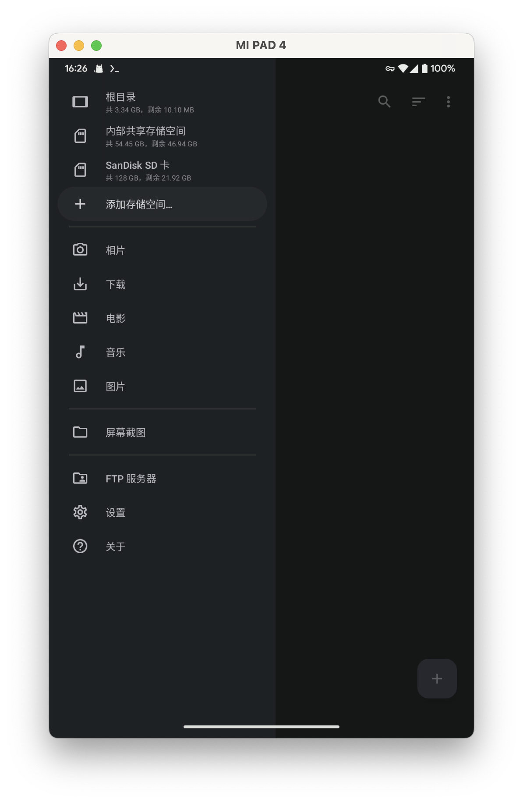
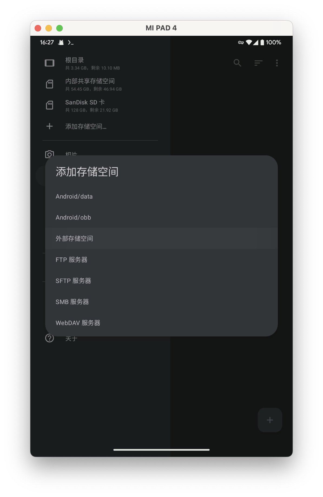
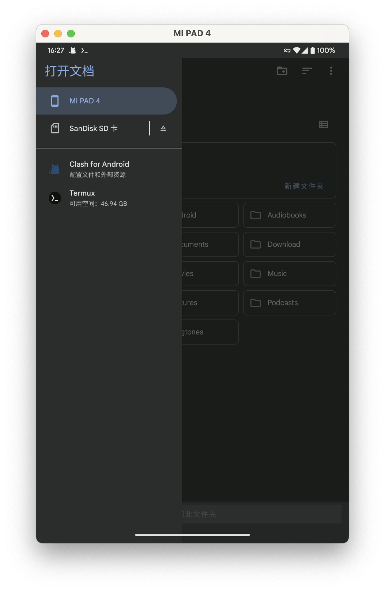
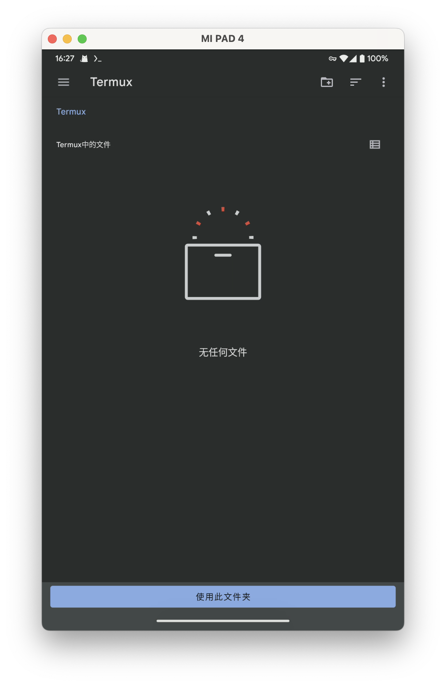
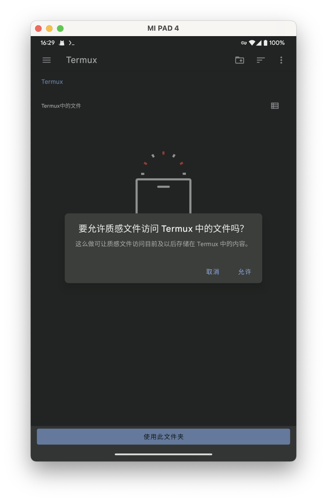
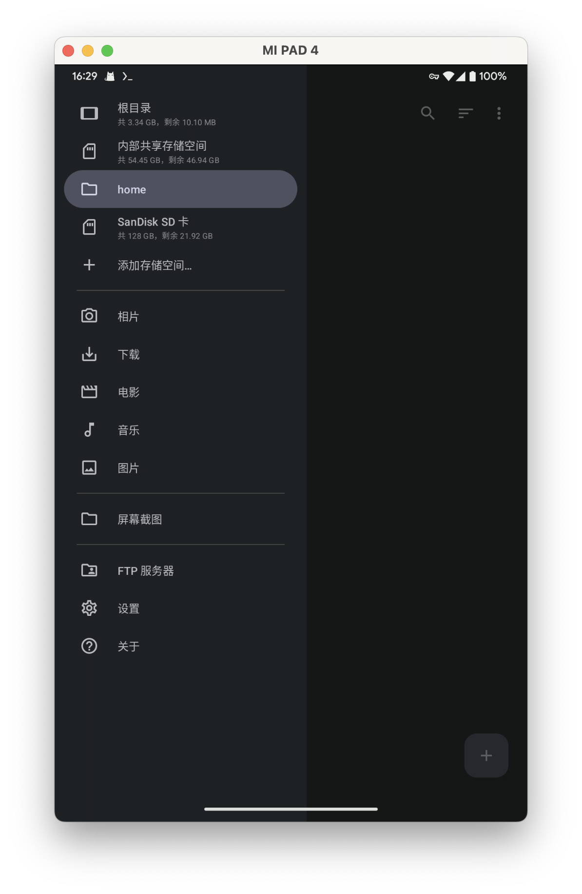
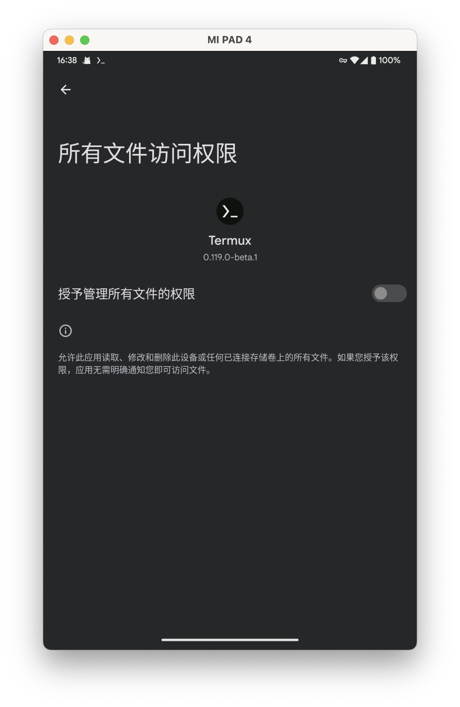
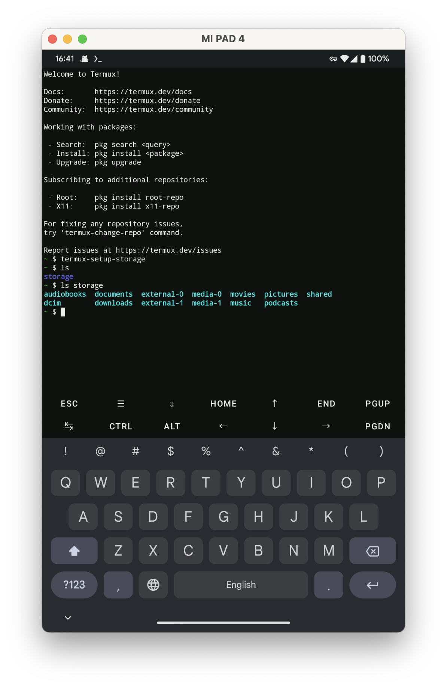

Termux
Quote
Termux is an Android terminal emulator and Linux environment app that works directly with no rooting or setup required. A minimal base system is installed automatically - additional packages are available using the APT package manager
Termux 是一款 Android 上的终端模拟器和 Linux 环境应用程序，无需 root 权限即可运行。通过 apt 软件包管理器可以下载更多软件
通过 Termux，一些支持远端计算或 API 调用的软件可以在手机上运行。（例如 SillyTavern）
Warning
看到这个描述就知道 iOS/iPadOS/HarmonyOS NEXT 是用不了的。
Info
Termux 文档目前位于 https://wiki.termux.com/wiki/Main_Page ，正在计划迁移回主站
使用建议
Quote
-
学习 shell 脚本！
你不一定需要十分精通，但至少需要知道自己在做什么，以及你获得的各种脚本会做什么。
-
始终保持软件包最新！
定期运行
pkg upgrade命令，或至少在安装新软件包之前运行命令。 不更新软件包或降级软件包有可能会导致问题。 -
一定要备份！
因为 Termux 不提供旧版本的软件包，并且它是一个滚动发布版本。所以如果没有备份，如果出现问题，您可能无法回滚。
-
不要执行你不知道的脚本和命令！
查看从互联网上下载的脚本。仔细检查你在终端中输入的内容。
-
仔细阅读打印到终端的所有内容！
理解信息消息有助于解决可能发生的问题。
下载
Warning
Termux 的 Play 商店版本不再更新许久，最近重新开始更新的版本为了通过 Google Play 商店的审核而删除了部分功能，因此建议通过下述的 GitHub 或 F-Droid 安装。
- 下载 F-Droid:：https://f-droid.org/
- 下载 Termux：https://f-droid.org/zh_Hans/packages/com.termux/
Termux 的一些可选组件
除了本体 App 以外，Termux 支持通过一些可选 App ，扩展出一些额外功能。
-
Termux Styling: https://f-droid.org/zh_Hans/packages/com.termux.styling
更改 Termux 终端的背景和字体。
-
Termux:Float：https://f-droid.org/zh_Hans/packages/com.termux.window/
在浮动终端窗口中使用 Termux
-
Termux:Widget：https://f-droid.org/zh_Hans/packages/com.termux.widget
增加可以从主屏幕启动 Termux 命令的快捷方式或桌面小组件。
-
Termux:API：https://f-droid.org/zh_Hans/packages/com.termux.api/
从 Termux 访问 Android 功能，例如共享存储空间和剪贴板。
-
Termux:Boot：https://f-droid.org/zh_Hans/packages/com.termux.boot/
允许在手机开机时自动运行一些 Termux 中的命令。
Warning
在正常的 Android 系统上，你只要授予 F-Droid 或者浏览器“安装未知应用”权限，然后就可以顺利的完成安装。
请自行解决各种国产“OS”中想尽一切办法阻止你安装你自己下载来的软件的问题。
第一次启动
你第一次启动 Termux 的画面大约就是这个样子。
- 输入法键盘上方的按键提供了许多实用的功能。例如光标，以及电脑上常见的 Ctrl 和 Alt 键。
- 如果觉得字体大小太大或是太小，可以双指缩放进行调整。
-
从左边滑动可以打开会话列表。
- 点击“KEYBOARD”可以展开或隐藏输入法的虚拟键盘。
- 点击“NEW SESSION”可以打开一个新的会话窗口，在你需要同时运行多个程序时（例如 Clewd 和 SillyTavern）会很有用。
更换镜像仓库
Tips
使用合适的镜像仓库（例如链接速度最快的），可以有效缩短你安装软件或升级时的等待时间。
特别是 Termux 默认的仓库在墙国连接不佳的情况下。
Info
你打了这么多字，总该知道 Enter/回车/换行 说的是同一个键，而且你也知道是哪个了吧？
后面就统一叫 Enter 了。
输入 termux-change-repo 然后按 Enter 运行。
因为选择一组镜像仓库，可以在一个仓库连接失败时尝试另一个，所以这里直接进入下一步。
选择镜像仓库组的位置，这里把光标指向距离你最近的位置，例如 China Mainland，然后按空格键选择这个选项。 一个选项被选中时，前面会有一个星号（*）。
按 Enter 确认，Termux 会自动测试连接到各个镜像站的速度，然后选择最快的一个。
更新环境
首先运行 pkg update ，它会更新设备上缓存的软件仓库中软件的列表，然后报告是否有软件需要更新。
这里 41 packages can be upgraded. Run 'apt list --upgradable' to see them.
就表示有 41 个软件包可以更新？
那为什么里面叫做 apt ？
因为 Termux 使用的包管理器其实就是 apt。
如果你熟悉 apt 的使用（例如你是个 Debian/Ubuntu 用户），你也可以像以往一样使用你熟悉的 apt 命令。
接下来运行 pkg upgrade。
会提示你哪些软件需要升级，会下载多少数据。你可以输入 Enter 继续下一步。
问题中的 [Y/n] 表示什么？
大写的字母用来表示当你直接按下 Enter 时会做出什么选择，例如在这里就是确认。
某些破坏性操作的默认值可能是取消，这个时候你往往会遇到类似 [y/N] 的提示。
如果你想继续，那么就输入一个字母y，然后按Enter键确认。
在第一次升级的时候，你也许会遇到这样的问题，提示你文件可能存在冲突。
What would you like to do about it ? Your options are:
# Y/I: 安装新文件，覆盖现有文件
Y or I : install the package maintainer's version
# N/O：保持现有文件
N or O : keep your currently-installed version
# D：用 diff 工具展示文件间的差异。
# Z：打开一个新的 Shell，用于测试变更。
# 这两个选项如果你不知道是在做什么，那你就用不上。
D : show the differences between the versions
Z : start a shell to examine the situation
# 默认选项是抱持现有文件不变。
The default action is to keep your current version.
*** sources.list (Y/I/N/O/D/Z) [default=N] ?
因为第一次升级时，我们确信没有修改过哪些文件，所以你可以输入 y 或者 i 确认覆盖。
如果你第一次升级之后再遇上这种问题，请格外小心
之后就不能无脑的确认覆盖了，除非你确信你没有修改过冲突的文件。
Info
升级之后你的镜像仓库设置可能会被还原成默认设置。建议再按照上面的步骤运行一次设置镜像仓库的命令。
安装软件
一行命令就足够了，以安装 Node.js 为例。
~ $ pkg in nodejs-lts
Checking availability of current mirror:
[*] https://mirrors.tuna.tsinghua.edu.cn/termux/apt/termux-main: ok
Reading package lists... Done
Building dependency tree... Done
Reading state information... Done
The following additional packages will be installed:
c-ares libicu
Suggested packages:
clang make pkg-config python
The following NEW packages will be installed:
c-ares libicu nodejs-lts
0 upgraded, 3 newly installed, 0 to remove and 0 not upgraded.
Need to get 19.5 MB of archives.
After this operation, 101 MB of additional disk space will be used.
Do you want to continue? [Y/n]
~ $ node
The program node is not installed. Install it by executing:
pkg install nodejs
or
pkg install nodejs-lts
保持 Termux 后台运行
Warning
在大多数国产品牌的”OS“上，仅仅这么做还不够。
但此文档无法涉及所有品牌的所有状况，请自行查找如何在你的手机上保持应用后台运行的方法。
这一部分只会提示你如何为 Termux 关闭 Android 自带的”电池优化“功能。
下拉通知栏，点击 Termux 通知中的 "Acquire wakeclock"。
拉回通知栏，允许 Termux 在后台运行。
之后你可以点击 "Release Wakeclock" 取消常驻，在 Termux 退出时，这个状态也会自动重置。
查看 Termux 数据
支持 DocumentProvider 的文件管理器可以查看 Termux 文件，这里推荐质感文件。
 打开质感文件的菜单，选择”添加存储空间“。  选择”外部存储空间“。  在打开的文档选择器窗口中，拉出左边的菜单，选择 ”Termux“。   选择底部的”使用此文件夹“，并确认。  菜单中新增的”home“就是 Termux 的主目录。
备份和还原 Termux Prefix 数据
Info
为了让 Termux 访问的手机的共享存储空间，首先要安装 Termux:API 。
除此以外，termux-backup 命令并不会备份 Termux 主目录的数据。
假如你之前没有在 Termux 中访问设备的共享存储空间，那么先运行 termux-setup-storage 然后为 Termux 授予所有文件访问权限。

接下来，你就能在 Termux 的主目录里看到 storage 目录，里面是共享存储空间的符号链接。

Info
但是，Android 的共享存储空间（以及外部存储设备）不支持可执行权限，因此不要把可执行文件（例如脚本）放在那些地方。
运行 termux-backup 命令可以备份整个 Termux 目录中的内容。
待到运行完毕之后，可以在文件管理器中看到备份的文件，
运行 termux-restore 命令可以从备份还原。
Warning
你 Termux 当前的所有数据都将被备份中的内容覆盖。